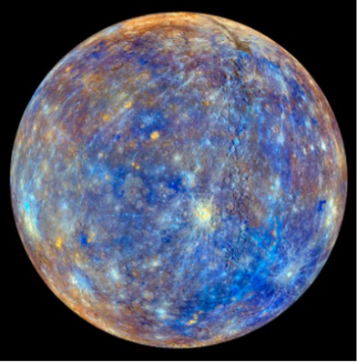
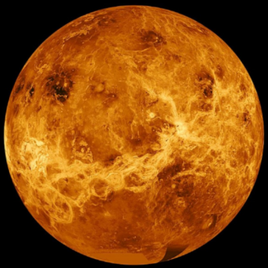
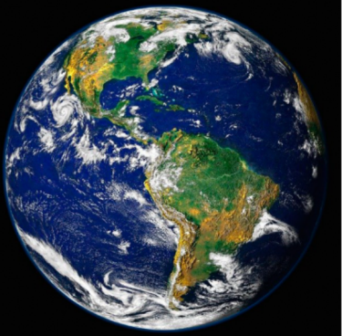
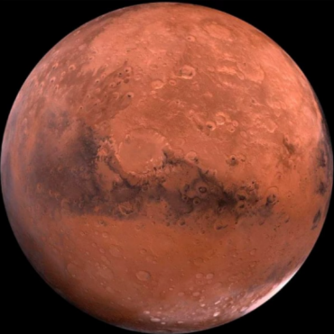
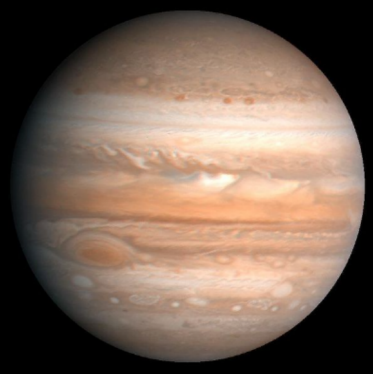
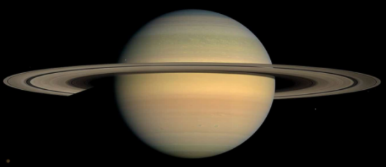
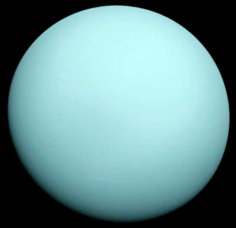
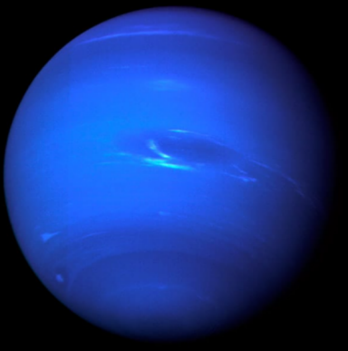
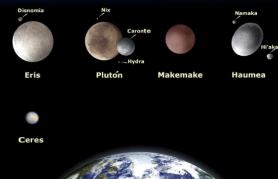

¿Qué es el Sistema Solar?
El Sistema Solar es un conjunto formado por el Sol y los ocho planetas que giran a su alrededor.
De los ocho planetas, un es donde vivimos: la Tierra
Además de estos elementos hay otros cuerpos celestes que también orbitan alrededor de la gran
estrella solar,como los sátelitesde cada planeta, los cometas o los asteroides.
¿Dónde está el Sistema Solar?
En el universo hay millones de galaxias. Una de ellas es la que conocemos como Via Láctea.
La Via Láctea, formada por estrellas, polvo y gas, tiene forma de espiral. Podría decirse que su
aspecto es algo así como un remolino con varios brazos; pues bien, en uno de ellos, el llamado
brazo de Orión, se encuentra el Sistema Solar.

¿Cuándo se formó el Sistema Solar?
Lo cierto es que hace tanto tiempo que es muy difícil saber este dato con seguridad, pero se cree
que fue hace... ¡4.5 MIL MILLONES DE AÑOS! Si lo piensas bien te darás cuenta de que
estamos hablando de un espacio temporal impactante y que nos resulta difícil de imaginar
¿Cómo se formo el Sitema Solar?
Este es otro tema que todavia no está del todo claro, pero según las últimas investigaciones parece ser
que la fortísima explosión de una estrella provocó que una gran nube de gas y polvo se contrajera y
empezara a girar a gran velocidad. Por lo visto, la mayor parte de esta materia se concentró en el
centro y se fue calentando cada vez más y más, hasta formar una gran estrella: el Sol.
Después, alrededor del Sol, el resto del polvo y gas fue chocando y juntandose hasta formar los
diferentes planetas.
El Sol y los ocho planetas del Sistema Solar
El Sol
El Sol es el gran protagonista de este sistema, que por eso se llama Sistema Solar. Está situado en el
centro y todo gira en torno a él.
El Sol es una estrella inmensa que emite luz y calor. Sin el Sol, la vida en la Tierra no existiria.

Los ocho planetas del Sistema Solar
Los planetas del Sistema Solar son ocho cuerpos celestes sólidos de forma casi circular. A diferencia del Sol, No tienen luz propia.
Los planetas están siempre moviendose y girandose alrededor del Sol. A este movimiento se le llama movimiento de traslación, y cada uno lo hace en un tiempo diferente. El tiempo que
nuestro planeta Tierra tarda en dar la vuelta completa al Sol es lo que llamamos año, es decir, 365 días. Si, eso es: cada año que vivimos es una vuelta que da la Tierra alrededor del Sol
Además de esta órbita, la Tierra gira sobre sí misma y tarda exactamente 24 horas. Para nosotros
es un día completo. Esto se conoce movimiento de rotación.
Por tanto, mientras la TIerra da una vuelta completa alrededor del Sol (un año) gira sobre sí misma
365 veces (365 días).
Por orden, de más cercano a más lejano del Sol, los planetas son: Mercurio, Venus, Tierra,
Marte, Júpiter, Saturno, Urano y Neptuno.
Otros elementos del Sistema Solar
Mercurio
Es el que está más cerca del Sol y también el más chiquitín. Es un planeta sin sátelites en su
órbita. Su superficie, cubierta de roca y cráteres, se parece a la de la Luna.
Su nombre es en honor a Mercurio, dios romano del comercio.

Venus
A continuación de Mercurio encontramos a Venus. Es el que más se parece a la Tierra. Está cubierto
de nubes muy espesas que reflejan la luz solar, de modo que por la noche se ve brillante y podemos
distinguirlo a simple vista.
Su nombre es en honor a Venus, diosa romana del amor.

Tierra
La Tierra es nuestro maravilloso planeta, el lugar donde vivimos. Es el único habitado gracias a
que se dan las condiciones perfectas para ello: posición en relación al Sol, luz, temperatura, etc
La Tierra no es una esfera perfecta porque está achatada por los polos. Está compuesta por tres
capas: corteza, manto y núcleo. El 70% de su superficie está cubierta de agua y por eso se ve
azul desde el espacio. Su satélite natural es la Luna.
Su nombre es en honor a Terra, diosa romana que personifica la Tierra

Marte
Si la Tierra es conocida como el “planeta azul”, a Marte se le suele llamar "planeta rojo",
lógicamente por su aspecto rojizo. Posee el volcán más grande de los ocho planetas del Sistema
Solar. Uno de los grandes hallazgos cientificos de los últimos años ha sido encontrar en Marte
agua subterránea. Tiene dos satélites llamados Fobos y Deimos.
Es uno de los planetas más investigados y existen muchas leyendas sobre que en él existen seres
inteligentes. De hecho, la palabra “marciano” se refiere a “habitante de Marte”. Esto, al menos por
ahora, es pura ciencia ficción.
Su nombre es en honor a Marte, dios romano de la guerra.

Júpiter
Es un planeta gigantesco: su tamaño es 1300 veces mayor que la Tierra. Tiene muchos satélites
naturales y los más importantes son Ío, Europa, Ganimedes y Calisto.
Su nombre es en honor a Júpiter, el dios más importante de la mitología romana.

Saturno
Saturno es un planeta de color amarillento y, junto a Júpiter, el más caliente. Lo más especial de
Saturno son sus famosos anillos compuestos de rocas y agua helada Alguno de sus satélites
naturales son Hyperion e Iapeto.
Su nombre es en honor a Saturno, dios romano de la agricultura.

Urano
Urano se caracteriza por ser un planeta muy frío porque estar alejado del Sol. Su eje de rotación
está muy inclinado, y se ve de color azulado por los gases que forman su superficie
Urano también tiene un sistema de anillos y unos cuantos satélites naturales entre los que se
encuentran Titania, Oberón y Miranda.
Su nombre es en honor a Urano, dios romano del cielo.

Neptuno
Neptuno es el más alejado del Sol y esto lo convierte en el planeta más frío del Sistema Solar.
También, por el gas existente en su atmósfera, se ve de color azul. Posee un sistema de cuatro
anillos formados por partículas de polvo.
Su nombre es en honor a Neptuno, dios romano de las aguas

Otros elementos del Sistema Solar
Como hemos dicho al principio, además del Sol y los ocho planetas que forman el Sistema Solar
existen otros elementos que también hay que tener en cuenta
Los planetas enanos
Son pequeños planetas que también orbitan alrededor del Sol y NO son satélites de ningún otro
planeta. En nuestro Sistema Solar existen cinco: Ceres, Eris, Makemake, Haumea y Plutón.

Satélites
Se llama satélite a un cuerpo que gira alrededor de otro que suele ser más ande. Son sólidos y
carecen de atmósfera.
En el Sistema Solar los planetas poseen satélites, si bien alrededor de la Tierra lo hay un satélite
natural: la Luna.
La Luna es un cuerpo celeste rocoso y sin anillos. Los seres humanos la admiramos por su
hermosura, por su cercanía y porque brilla en el cielo. Debes saber que en realidad la luna es un
planeta oscuro que no desprende luz, sino que refleja la luz que recibe del sol.
*Se llama Satélites artificiales a los fabricados y lanzados al espacio por los humanos para tomar
todo tipo de datos sobre un planeta
Y además...
En el Sistema Solar hay otros elementos, como los asteroides, los cometas y los meteroides.